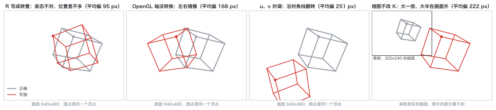
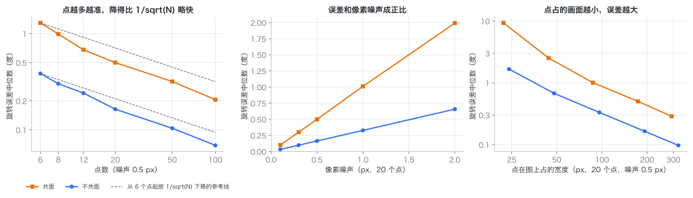
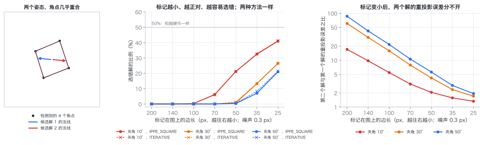
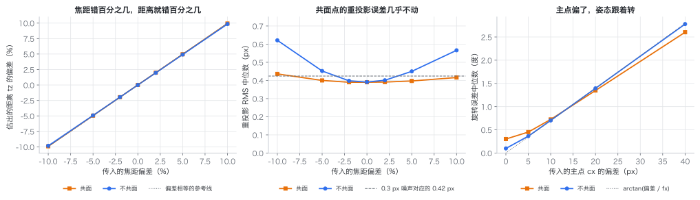
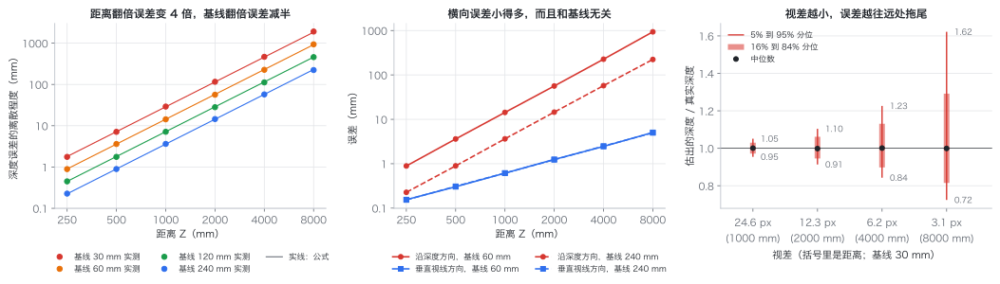
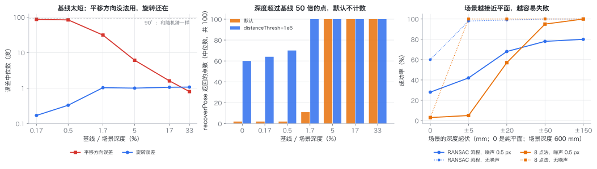

本章目标：把前面学过的特征、匹配、RANSAC 和几何变换串成一条三维视觉链路。读完后，你应该能解释“一个三维点怎样落到像素上”，并能用 OpenCV 完成位姿估计与虚拟物体叠加。
本章所有数字都来自合成相机上的实测，记录在 figures/实测数字.json，由 solutions 分支的 solutions/figures/ch07.py 生成。无畸变的投影用本章作业的参考实现，PnP、三角化和本质矩阵用 OpenCV（实测时的版本是 5.0.0）。合成相机和第 17 章是同一台：640×480，\(f_x = 820\)，\(f_y = 790\)，主点 (318, 247)，长度单位是毫米。换成真实相机或别的 OpenCV 版本，数值会变，结论的方向要自己再测一遍。
0. 本章怎么学
应用场景：标定、位姿估计、渲染共用的相机模型。第 17 章标定要估的就是这里的 \(K\)、\(R\)、\(t\) 和畸变系数；第 21 章的渲染相机用同一套投影，只是坐标轴的朝向不同。凡是要回答“这个三维点落在图上哪里”“这个物体相对相机在哪里、朝哪边”的问题，都从本章的投影链路出发。
优先级：P1，主线能力。前置是第 4 章（齐次坐标、单应、RANSAC）。后面第 17 章（相机标定）直接接在本章之后，第 21 章（3D 数学与渲染管线）用同一套相机模型。
| 档位 | 累计用时 | 做什么 | 做到什么算完 |
|---|---|---|---|
| 速通 | 3 小时 | 读 7.1 节全部、7.2 节的三个“实测”小节、7.3 节的“三角化的深度误差”，看懂图 1 到图 5，按 7.5 节的五步玩一遍演示，答完 5 道小测 | 能讲清一个三维点经过哪几步落到像素上，\(t\) 为什么不是相机位置，PnP 的误差由什么决定，为什么重投影误差小不代表位姿准 |
| 标准 | 6 小时 | 读完全章，跑 Notebook，完成作业 7-1_针孔投影.py 并验收通过，做前三个破坏实验，填实验记录 |
验收 PASS，实验记录里有一个投影失效的案例（点在相机后方、内参不匹配或约定弄反），能回答自测问题 |
| 深挖 | 7 小时 | 再做后三个破坏实验，从“扩展”一节里选一项 | 能用自己跑出来的数字报告 PnP 或三角化的误差随条件怎么变 |
用时超过所选档位的 1.5 倍还没做完，就把卡点写进 学习进度.md，先往下一章走。工业视觉主线路线里本章只要求速通档。7.3 节的对极几何，第二部分现有的讲义里没有再用到，卡住了可以先跳过。原讲义配套的 AR 标记练习需要摄像头和标定结果，不计入三档用时，建议学完第 17 章再做。
7.1 针孔相机：把三维世界压到二维平面
先建立直觉
相机最核心的动作不是“拍照”，而是投影：从三维点发出的光线穿过一个小孔，在成像平面上留下二维位置。真实镜头很复杂，但只要暂时忽略畸变，就能用针孔模型描述大部分几何关系。
设三维点在相机坐标系中为 P_c=(X_c,Y_c,Z_c)，其归一化图像坐标为 (x,y)。相似三角形给出：
x = X_c / Z_c
y = Y_c / Z_c
这两式很重要：同一个物体离相机越远，Z_c 越大，投影越小；当 Z_c<=0 时，点在相机后方，通常不应显示。透视近大远小，不是额外特效，而是除以深度 Z_c 的自然结果。
归一化坐标还不是像素。相机要用焦距和主点把它换成 (u,v)：
u = f_x * x + c_x
v = f_y * y + c_y
写成齐次矩阵：
s [u v 1]^T = K [X_c Y_c Z_c]^T
K = [f_x 0 c_x
0 f_y c_y
0 0 1 ]
K 是内参矩阵。f_x、f_y 是以像素计的焦距，可能不同；(c_x,c_y) 是主点，通常接近图像中心，但不能想当然地固定为中心；s 在这里等于深度 Z_c。内参描述“相机自身怎样成像”，换了分辨率或缩放图像后也要相应调整。
用本章的合成相机算一下（参考实现，\(f_x = 820\)）：一段正对相机、长 100 mm 的线段，放在 250、500、1000、2000 mm 处，投影长度依次是 328、164、82、41 px。距离翻倍，长度减半，这就是除以 \(Z_c\) 的全部效果。
必须分清的四个坐标系
一条完整链路是：
世界坐标 P_w --[R|t]--> 相机坐标 P_c --除以 Z--> 归一化图像坐标
--K--> 像素坐标 (u,v)
- 世界坐标系：人为选择的三维参考系，例如令 AR 标记左上角为原点。
- 相机坐标系：原点在光心，OpenCV 常用
x向右、y向下、z向前。 - 图像坐标系：成像平面上的连续坐标，单位不是像素。
- 像素坐标系：数组中的离散位置
(u,v)；读取数组仍写img[v, u]，即先行后列。
外参满足：
P_c = R P_w + t
s p = K [R|t] P_w_h
其中 R 是 3×3 旋转矩阵，t 是 3×1 平移向量，P_w_h=[X,Y,Z,1]^T。一个常见误解是“t 就是相机在世界中的位置”。并不直接是：上式描述的是世界点变到相机坐标系，相机中心在世界坐标系中的位置为 C_w=-R^T t。
用和第 17 章相同的记号，把整条链路写成一个式子：
\(\gamma\) 是倾斜系数，现代相机约等于 0，本章和作业都取 0。\(K\) 怎么从标定图里估出来是第 17 章的内容，本章把它当已知量。
“\(t\) 不是相机位置”可以用一组数看清楚。图 1 用的位姿是 \(t = (40, -25, 500)\) mm，长度 502.2 mm；按 \(C_w = -R^\top t\) 算出的相机中心是 \((-243.1, -120.3, -422.7)\) mm。两个向量相差 970 mm，只有长度相同。\(t\) 的含义是“世界原点在相机坐标系里的位置”，所以 \(t_z\) 可以直接读成“世界原点在相机前方多远”，\(t\) 整体却不能读成相机在哪里。
实测：约定弄反时是什么样
投影链路上的每个约定都可能弄反，而且大多数时候程序不报错。把一个边长 100 mm 的立方体放在相机前 450 到 550 mm 处，随机取 300 个位姿（倾斜不超过 30°），用正确的写法和几种常见的错误写法各投影一次，比较 8 个顶点的位置。

| 写错的地方 | 画面上的症状 | 顶点偏差的中位数 |
|---|---|---|
| 旋转矩阵写成了转置 | 立方体还在原来的位置附近，姿态不对 | 75.5 px |
| 先加 \(t\) 再乘 \(R\) | 位置差得最远 | 363.0 px |
| 把 \(t\) 当成相机位置，写成 \(R(P_w - t)\) | 300 个位姿里，8 个顶点全部落到相机后方 | 画不出来 |
| 位姿来自 OpenGL 约定的相机（看向 -Z、y 向上），没有转换，投影时检查了深度 | 同上，全部在相机后方 | 画不出来 |
同上，但用 cv2.projectPoints 投影 |
绕主点左右镜像 | 157.1 px |
| 把 \((u, v)\) 当成（行，列） | 沿画面对角线翻转 | 157.6 px |
| 图像缩小了一半，\(K\) 没改 | 尺寸大一倍，大半落在画面外 | 205.8 px（在缩小后的图上量） |
读表的结论：
- 只有“点落到相机后方”这一类错误会被深度检查拦住，其余的错误都会给出一组看上去正常的像素坐标。
- OpenGL 约定和 OpenCV 约定之间差一个绕 x 轴 180° 的旋转（第 21 章有对照表）。不转换的话所有点的 \(Z_c\) 都是负的。
cv2.projectPoints不检查深度，照样做除法，\(X_c / Z_c\) 变号、\(Y_c / Z_c\) 不变，结果正好是左右镜像。 - 排查时先打印相机坐标，看 \(Z_c\) 是不是正的。再把世界原点投影出来：它的相机坐标就是 \(t\)，应该落在 \((f_x t_x / t_z + c_x,\; f_y t_y / t_z + c_y)\)。这个点不对，问题在 \(t\) 或 \(K\)；这个点对了其他点不对，再查 \(R\)。
还有一个和约定有关的坑：cv2.projectPoints 不检查点在不在相机前方。相机放在原点不旋转，同一个点 \((30, 20, Z)\) 放在前方 500 mm 处，参考实现和 OpenCV 都投到 (367.2, 278.6)；放到后方 500 mm 处，参考实现按作业的约定返回 NaN，OpenCV 返回 (268.8, 215.4)，正好是前一个结果关于主点的对称位置，数值上看不出任何异常。在相机前方的点上两者是一致的，200 个随机点的最大差是 1.1e-13 px。画虚拟物体时，只要有顶点可能转到相机后面，就要自己按 \(Z_c\) 过滤。
cv2.projectPoints，会得到什么？B。实测同一个点放在前方投到 (367.2, 278.6)，放到后方投到 (268.8, 215.4)，是前者关于主点的对称位置。OpenCV 只做除法，不检查 \(Z_c\) 的正负。返回 NaN 是本章作业要求的行为，要自己实现；函数也不会因此抛异常。
畸变：为什么直线到了图像边缘会弯
针孔模型假设理想镜头，真实镜头还会产生：
- 径向畸变：桶形或枕形，离中心越远越明显，常用
k1,k2,k3描述； - 切向畸变：镜头与传感器不完全平行，常用
p1,p2描述。
OpenCV 常见畸变向量 shape 为 (5,) 或 (1,5)：
dist = [k1, k2, p1, p2, k3]
标定的本质，是用多张已知尺寸的棋盘格图像，同时估计 K、畸变系数以及每张图的外参。拍标定图时要覆盖画面四角、改变角度和距离；只在中央正对着拍很多张，数量虽多，约束却很弱。
rms, K, dist, rvecs, tvecs = cv2.calibrateCamera(
object_points, image_points, image_size, None, None
)
# object_points: 每张图一个 (N, 3) float32
# image_points: 每张图一个 (N, 1, 2) float32
# image_size: (width, height)，不是 image.shape[:2]
判断标定好坏不能只看函数是否返回。应把三维角点重新投影，计算重投影误差：预测像素与检测像素之间的平均距离。误差小意味着当前数据被模型解释得好，但若标定姿态单一，参数仍可能泛化很差。
畸变模型的公式和第 17 章第 2 节相同，作用在归一化坐标 \((x, y) = (X_c / Z_c,\; Y_c / Z_c)\) 上，记 \(r^2 = x^2 + y^2\)：
然后 \(u = f_x\,x_d + c_x\)，\(v = f_y\,y_d + c_y\)。\(k_1 < 0\) 是桶形，\(k_1 > 0\) 是枕形。畸变加在透视除法之后、乘 \(K\) 之前，这个顺序不能换。
标定本身（Zhang 方法的推导、标定图该怎么拍、怎样判断标定结果可不可信）留给第 17 章，那里有“姿态单一时焦距不可信”“只拍中央时四角误差放大”的实测。本章的作业不含畸变；本章后面的实验，除了专门说明的，也都不加畸变。
上面那段代码有两处要留意。calibrateCamera 的第一个返回值是重投影误差的均方根（RMS，单位像素），不是成功标志，所以这里把原来的变量名 ok 改成了 rms。image_size 的顺序是（宽，高），写反会怎样见“常见坑速查”一节的实测。
7.2 PnP：从 3D—2D 对应关系反推相机位姿
PnP（Perspective-n-Point）的问题是：已知若干世界点 P_w、对应像素 p、内参 K 和畸变，求 R,t，使重投影误差最小：
min Σ || p_i - project(K, R, t, P_i) ||²
直觉上，你拿着一张已知尺寸的标记在镜头前转动；程序知道标记四角在标记坐标系中的三维位置，也检测到了四个像素位置，于是倒推出标记相对相机的姿态。
一个逐步例子：平面标记上画立方体
假设标记边长为 L=0.05m，把标记平面设为 Z=0：
import cv2
import numpy as np
L = 0.05
object_pts = np.array([
[0, 0, 0], [L, 0, 0], [L, L, 0], [0, L, 0]
], dtype=np.float32) # (4, 3)
image_pts = np.array([
[312, 211], [441, 220], [430, 349], [301, 338]
], dtype=np.float32) # (4, 2)
ok, rvec, tvec = cv2.solvePnP(
object_pts, image_pts, K, dist,
flags=cv2.SOLVEPNP_IPPE
)
# rvec: (3,1)，Rodrigues 旋转向量；tvec: (3,1)
R, _ = cv2.Rodrigues(rvec) # (3,3)
这里原来写的是 cv2.SOLVEPNP_IPPE_SQUARE，和上面的 object_pts 配不上，已改成 cv2.SOLVEPNP_IPPE。IPPE_SQUARE 要求物体点按固定的顺序和位置给出：原点在标记中心，依次是 [-L/2, L/2, 0]、[L/2, L/2, 0]、[L/2, -L/2, 0]、[-L/2, -L/2, 0]（OpenCV 文档的规定）。把“角点在原点”的写法传给它，函数照样返回成功，结果却完全是错的。用上面这组像素点和本章的合成相机实测（长度换成毫米）：IPPE_SQUARE 返回的 \(t_z\) 是 -14.1 mm，标记被算到了相机后方，重投影误差 4590 px；换成 IPPE 之后 \(t_z\) 是 316.9 mm，重投影误差 1.15 px。在 300 个随机位姿上，错误写法的旋转误差中位数是 177.9°，重投影误差中位数 2460 px。想用 IPPE_SQUARE，就把物体点改成文档规定的顺序；这时标记坐标系的 y 轴朝上、z 轴朝向相机，下面的立方体要改成朝 +Z 画。
rvec 不是欧拉角。它的方向表示旋转轴，模长表示旋转角（弧度）。不要把三个分量当作绕 x、y、z 的角度直接解释。
用数字看一下。先绕 x 轴转 20°、再绕 y 轴转 40°、再绕 z 轴转 30°，换成旋转向量是 (8.3°, 43.4°, 21.5°)（三个分量换算成度），总转角 49.2°，和三个欧拉角对不上。旋转向量也不能直接相加：把“绕 x 轴 20°”和“绕 y 轴 40°”两个旋转向量加起来，和真正先后做这两个旋转相差 6.9°。要合成旋转，先用 cv2.Rodrigues 换成矩阵再相乘。
接着定义立方体 8 个顶点。若希望立方体“朝标记上方”而不是钻进标记，要注意 OpenCV 相机坐标的方向以及你选择的标记坐标约定；这里用负 Z 表示从标记平面向外：
cube = np.float32([
[0,0,0], [L,0,0], [L,L,0], [0,L,0],
[0,0,-L], [L,0,-L], [L,L,-L], [0,L,-L]
]) # (8, 3)
pixels, _ = cv2.projectPoints(cube, rvec, tvec, K, dist)
pixels = np.round(pixels.reshape(-1, 2)).astype(int) # (8,2)
最后连接底面、顶面和四条竖边。此处 projectPoints 会自动完成外参变换、透视除法、内参映射和畸变，因此比自己拼公式更不易漏项。
它唯一不替你做的是深度检查：7.1 节实测过，相机后方的点会被投到一个看上去正常的位置。立方体的某个顶点转到相机后面时，要自己按相机坐标的 \(Z_c\) 过滤。
PnP 的几个现实问题
- 四点共面时可能存在多个几何上合理的姿态；方形标记优先考虑
IPPE_SQUARE，并保证点顺序符合 API 约定。 - 检测点顺序必须和三维点顺序一一对应。左上、右上、右下、左下一旦错位，函数可能仍返回结果，但立方体会翻转或乱跳。
- 有离群匹配时，用
cv2.solvePnPRansac()；它反复抽样位姿，再用重投影误差判断内点。 - 单目只能从已知尺度恢复绝对尺度。若把标记边长从
0.05错写成5，旋转近似不变，平移尺度会放大约 100 倍。
这四条都可以量出来。点顺序和单位两条用边长 50 mm 的方形标记，300 个随机位姿，角点噪声 0.3 px；离群点一条用 50 个不共面的点，噪声 0.5 px，各 200 次。
- 共面多解和
IPPE_SQUARE。实测IPPE_SQUARE选错解的比例和默认方法几乎一样，它并不能避免多解。它的用处是配合cv2.solvePnPGeneric把两个候选解都拿出来，见下面“方形标记的两个解”。 - 点顺序。图像点整体错开一位时，重投影 RMS 的中位数和顺序正确时一样，都是 0.17 px，估出的旋转却差了 90.0°；整体反向时同样是 0.17 px，旋转差 179.6°。只有“交换相邻两个”这种打乱了环绕方向的错法，才会让重投影误差涨到 770 px，并且有 60% 的情况估出的 \(t_z\) 是负的。正方形错开一位之后仍然是同一个正方形，所以重投影误差查不出这类点序错误，只能在原图上给角点编号来查。
- 离群点。50 个点里只要混进 1 个错误对应，
solvePnP的旋转误差中位数就从 0.11° 变成 5.14°，混进 5 个是 22.14°。solvePnPRansac（重投影阈值 2 px，200 次迭代）在一半的点是错的时仍然是 0.15°；错点占到 70% 时，200 次里有 157 次返回失败。 - 单位。物体点坐标乘 100 之后，平移在 300 个位姿上都正好是 100 倍，两次的旋转之差不超过 0.002°。尺度只进入平移，不影响旋转。
再补一条原来没提的：最少点数。OpenCV 5.0.0 里默认的 SOLVEPNP_ITERATIVE，点共面时 4 个就够；点不共面时，4 个点 200 次里失败 188 次，5 个点失败 199 次，报错信息是“DLT algorithm needs at least 6 points”，6 个点才全部成功。不共面的点少于 6 个时可以换 SOLVEPNP_SQPNP，下一小节的表里有它的结果。
实测：位姿误差由什么决定
物体点在边长 120 mm 的正方形（共面）或立方体（不共面）里随机取，物体在相机前 450 到 550 mm 处，倾斜不超过 30°。20 个点时它们在图上大约占 174 px（共面）和 193 px（不共面）宽。像素噪声是每个坐标独立的高斯噪声，用 cv2.solvePnP 的默认方法，每种条件 300 次，看旋转误差（估出的 \(R\) 和真值之间的夹角）的中位数。

| 点数（噪声 0.5 px） | 6 | 8 | 12 | 20 | 50 | 100 |
|---|---|---|---|---|---|---|
| 共面：旋转误差中位数 | 1.295° | 0.992° | 0.680° | 0.500° | 0.318° | 0.206° |
| 不共面：旋转误差中位数 | 0.385° | 0.302° | 0.241° | 0.164° | 0.104° | 0.069° |
| 像素噪声（20 个点） | 0.1 px | 0.3 px | 0.5 px | 1.0 px | 2.0 px |
|---|---|---|---|---|---|
| 共面：旋转误差中位数 | 0.100° | 0.300° | 0.500° | 1.011° | 1.993° |
| 不共面：旋转误差中位数 | 0.033° | 0.098° | 0.164° | 0.328° | 0.657° |
| 点在图上占的宽度（共面，20 个点，噪声 0.5 px） | 22 px | 44 px | 87 px | 174 px | 292 px |
|---|---|---|---|---|---|
| 旋转误差中位数 | 9.336° | 2.523° | 1.006° | 0.500° | 0.287° |
| 旋转误差 90% 分位 | 55.02° | 35.29° | 2.63° | 1.20° | 0.62° |
五个结论：
- 误差和像素噪声成正比。噪声从 0.1 px 到 2.0 px 放大 20 倍，共面点的旋转误差从 0.100° 到 1.993°，也是 20 倍左右。角点或特征点定位有多准，位姿就有多准。
- 点越多越准。从 6 个点到 100 个点，旋转误差缩小到原来的 6.3 分之一（共面）和 5.6 分之一（不共面），比按 \(1/\sqrt{N}\) 估的 4.1 倍还多。一个可能的原因是随机取的点多了以后占的范围也更大（共面时图上的宽度从 143 px 涨到 201 px），第 4 条说明范围本身就影响误差。从 20 个点到 100 个点是 2.4 倍，和 \(1/\sqrt{N}\) 的 2.2 倍接近。
- 同样的范围，共面的点比不共面的差。20 个点、0.5 px 噪声时旋转误差是 0.500° 对 0.164°，3.0 倍。平面上的点只能靠透视缩短来判断倾斜，约束比有深度起伏的点弱。
- 点在图上占得越小，误差涨得越快。宽度从 174 px 减到 87 px，误差从 0.500° 到 1.006°，翻倍；减到 22 px 时中位数 9.336°，90% 分位 55.02°，位姿已经不可用。
- 平移误差集中在深度方向。20 个点、0.5 px 噪声时，共面点的深度方向误差中位数是 0.603 mm，横向只有 0.096 mm，差 6.3 倍；不共面是 0.460 mm 对 0.090 mm，差 5.1 倍。物体离相机多远，是单目位姿里最不准的一个量。
不同求解方法在同一组条件下的旋转误差中位数（噪声 0.5 px，各 300 次）：
| 点数和分布 | ITERATIVE（默认） | SQPNP | EPNP | IPPE |
|---|---|---|---|---|
| 4 个，共面 | 2.370° | 2.263° | 24.656° | 7.001° |
| 6 个，共面 | 1.295° | 1.268° | 5.914° | 1.749° |
| 20 个，共面 | 0.500° | 0.493° | 1.603° | 0.518° |
| 4 个，不共面 | 300 次里 288 次失败 | 0.596° | 1.936° | 只支持共面 |
| 6 个，不共面 | 0.385° | 0.377° | 0.401° | 只支持共面 |
| 20 个，不共面 | 0.164° | 0.166° | 0.178° | 只支持共面 |
在这组实验里，EPNP 在共面点上明显差于其他方法（20 个点时是默认方法的 3 倍多），不共面时各方法差别很小。4 个共面点时所有方法的 90% 分位都在 24° 以上（默认方法是 37.38°），这和下一小节要讲的多解有关。这只是这一组条件、这个 OpenCV 版本下的结果，换条件要重测。
实测：方形标记的两个解
一个平面物体离相机比较远、或者接近正对相机时，透视效应很弱，这时存在两个姿态，它们投出来的角点几乎一样。噪声稍大，求解就可能落到错的那个上，表现为视频里的立方体在两个姿态之间来回跳。cv2.solvePnPGeneric 配合 SOLVEPNP_IPPE_SQUARE 会把两个候选解和各自的重投影误差都返回，下面用它来统计。
边长 50 mm 的方形标记，4 个角点，噪声 0.3 px，每种条件 400 次。改变距离让标记在图上的边长从 200 px 减到 25 px，改变标记法线和视线的夹角。“选错”指函数返回的解离真值比另一个候选解更远。

| 标记在图上的边长（px） | 200 | 140 | 100 | 70 | 50 | 35 | 25 |
|---|---|---|---|---|---|---|---|
| 夹角 10°：选错的比例 | 0% | 0% | 0.3% | 6.2% | 21.2% | 32.5% | 41.0% |
| 夹角 30°：选错的比例 | 0% | 0% | 0% | 0% | 0.7% | 13.3% | 26.5% |
| 夹角 50°：选错的比例 | 0% | 0% | 0% | 0% | 0.3% | 7.0% | 21.0% |
| 夹角 10°：两个解的重投影误差之比 | 17.03 | 9.72 | 5.44 | 3.10 | 2.06 | 1.57 | 1.33 |
表里是 IPPE_SQUARE 的结果，比值是每种条件下的中位数。
- 标记越小、越接近正对相机，越容易选错。夹角 10°、边长 50 px 时五次里错一次（21.2%），25 px 时是 41.0%，离抛硬币的 50% 不远。
- 换求解方法没有用。同样在夹角 10°、边长 50 px 的条件下，默认的 ITERATIVE 选错的比例也是 21.2%，图 3 中间两种线型几乎重合。原文“方形标记优先考虑
IPPE_SQUARE”的建议解决不了多解。 - 噪声大了门槛会提前。噪声 1.0 px 时，边长 100 px、夹角 10° 就有 20.3% 选错。
- 能用的判据是两个解的重投影误差之比。把两种噪声下的全部条件放在一起看，比值的中位数在 4 以上的条件，选错的比例都不到 1%；在 2 上下（1.9 到 2.3）时是五分之一左右；低于 1.6 的条件都在 30% 以上。图 3 左边那个例子里，两个候选解的重投影误差是 0.13 px 和 0.35 px，都在噪声的量级，旋转误差却是 2.9° 和 61.0°。
实用的做法：每帧把两个解都取出来，比值接近 1 时不要相信单帧结果，用上一帧的姿态挑更接近的那个；或者让参与求解的点在图上占得更大（更大的标记、多个标记一起解）。
solvePnP 的结果会怎样？B。实测重投影 RMS 的中位数和顺序正确时一样，都是 0.17 px，旋转差 90.0°。错开一位之后四个点仍然围成同一个正方形，只是“哪个角是起点”变了。A 是交换相邻两个角点时的现象（770 px）。函数在这两种情况下都正常返回。
B。实测两种方法都是 21.2%。这个条件下两个候选解的重投影误差之比只有 2.06，数据本身分不清哪个是对的，换算法帮不上忙。同样的夹角，标记在图上有 100 px 宽时才降到 0.3%。
实测：内参不准时位姿被带偏多少
PnP 把 \(K\) 当成已知量。\(K\) 有误差时它不会报错，只会把误差转嫁到位姿上。下面的图像点用真内参生成（20 个点，噪声 0.3 px，300 次），求位姿时故意传入有偏差的内参。重投影 RMS 用传入的那组内参和估出的位姿来算，也就是程序自己能看到的那个数。

| 传入的焦距偏差 | -10% | -5% | -2% | 0 | +2% | +5% | +10% |
|---|---|---|---|---|---|---|---|
| 共面：距离 \(t_z\) 的偏差 | -9.91% | -4.95% | -1.97% | 0.01% | 1.99% | 4.96% | 9.93% |
| 共面：重投影 RMS（px） | 0.436 | 0.400 | 0.390 | 0.390 | 0.391 | 0.397 | 0.416 |
| 不共面：距离 \(t_z\) 的偏差 | -9.83% | -4.92% | -1.97% | 0.00% | 1.96% | 4.92% | 9.85% |
| 不共面：重投影 RMS（px） | 0.621 | 0.452 | 0.398 | 0.391 | 0.401 | 0.450 | 0.566 |
| 传入的主点 \(c_x\) 的偏差（共面） | 0 | 5 px | 10 px | 20 px | 40 px |
|---|---|---|---|---|---|
| 旋转误差中位数 | 0.302° | 0.452° | 0.724° | 1.347° | 2.602° |
| 横向 \(t_x\) 的偏差（mm） | 0.00 | -3.04 | -6.09 | -12.17 | -24.36 |
| 重投影 RMS（px） | 0.390 | 0.389 | 0.392 | 0.399 | 0.439 |
- 焦距错百分之几，估出的距离就错百分之几。旋转几乎不受影响：焦距偏大 5% 时，共面点的旋转误差中位数从 0.302° 变成 0.334°。
- 共面的点上，重投影误差几乎看不出焦距错了：偏大 5% 时 RMS 只从 0.390 px 变成 0.397 px。不共面的点稍微明显一些（0.391 到 0.450 px）。这和第 17 章 6.1 节是同一件事：物体接近一个平面时，焦距和距离可以互相补偿。
- 主点偏 20 px，旋转偏 1.347°，接近按 \(\arctan(20 / f_x)\) 估的 1.4°；横向平移偏 12.17 mm，接近按“平均距离 500 mm 乘以 20 再除以 \(f_x\)”估的 12.2 mm；重投影 RMS 只从 0.390 涨到 0.399 px。主点的误差被一个小转角和一段横向平移吸收掉了。
- 所以位姿的重投影误差小，不能证明内参是对的。要验证距离，就拿一个已知距离或已知尺寸的东西来量。
图像缩放是内参出错最常见的来源。把图像缩小一半后用三种内参求位姿（共面，其余条件同上）：
| \(K\) 不改 | 四个参数都乘 0.5 | 焦距乘 0.5，主点按 \((c + 0.5)/2 - 0.5\) 换算 | |
|---|---|---|---|
| 估出的距离是真值的几倍 | 2.015 | 1.000 | 1.000 |
| 旋转误差中位数 | 13.22° | 0.31° | 0.32° |
| 重投影 RMS（px） | 0.55 | 0.19 | 0.19 |
| 横向 \(t_x\) 误差中位数（mm） | 197.68 | 0.30 | 0.03 |
不改 \(K\) 时距离翻倍、旋转偏 13.22°，重投影 RMS 却只有 0.55 px（换成不共面的点是 1.31 px），又是一个靠重投影误差发现不了的错误。四个参数同比例缩放基本正确，但主点还差 0.25 px：实测 cv2.resize 用 INTER_AREA、INTER_LINEAR、INTER_CUBIC 缩小一半时，图上的点落在 \((u + 0.5)/2 - 0.5\)，比 \(u/2\) 偏 0.25 px；INTER_NEAREST 则落在 \(u/2\)。这 0.25 px 让横向平移的误差从 0.03 mm 变成 0.30 mm。画虚拟物体时无所谓，做亚像素测量时要算进去。
畸变也是内参的一部分。相机带 \(k_1 = -0.1\) 的畸变而求位姿时畸变系数传零，共面点的旋转误差中位数从 0.31° 变成 0.81°，距离误差从 0.08% 变成 0.60%，重投影 RMS 是 0.43 px。
solvePnP 的焦距比真值大 5%，物体点共面。程序算出的重投影 RMS 和估出的距离各会怎样？B。实测 RMS 从 0.390 px 变成 0.397 px，距离偏大 4.96%，旋转误差只从 0.302° 变成 0.334°。焦距偏大，把物体推远同样的比例，投影几乎不变，优化器就是这么做的。所以重投影误差小不能说明内参对，也不能说明距离对。
7.3 对极几何：两台相机怎样互相约束
如果同一个三维点分别出现在左右图像中，那么左图一个点并不会告诉你右图的唯一对应点，却能把搜索范围从整个二维图像缩小到一条对极线。这就是双目匹配能从二维搜索降成一维搜索的原因。
对归一化坐标 x1,x2，有：
x2^T E x1 = 0
E = [t]_x R
E 是本质矩阵，只和两台已标定相机之间的相对旋转、平移方向有关；[t]_x 是由 t 构造的反对称矩阵，使 [t]_x a = t × a。因为整体乘任意非零尺度仍满足约束，所以仅由两幅图通常只能恢复平移方向，不能恢复真实长度。
若使用像素坐标 p1,p2，内参也要被吸收进去：
p2^T F p1 = 0
F = K2^{-T} E K1^{-1}
F 是基础矩阵。一句话区分：E 服务于去除内参后的归一化坐标，F 服务于原始像素坐标。
OpenCV 的典型流程如下：
E, mask = cv2.findEssentialMat(
pts1, pts2, K, method=cv2.RANSAC,
prob=0.999, threshold=1.0
)
inliers, R, t, pose_mask = cv2.recoverPose(E, pts1, pts2, K)
shape 通常为 pts1, pts2: (N,2)，R: (3,3)，t: (3,1)。recoverPose 会利用“正确三维点应位于两台相机前方”的正深度条件，从多组候选位姿中选择一组。之后可用 cv2.triangulatePoints() 三角化，但要先准备两台相机的 3×4 投影矩阵，并把齐次结果除以最后一行。
要注意：相机几乎只旋转而没有平移、场景点近似共面、基线太短或匹配点集中在很小区域时，三维恢复会退化。公式没有报错，不等于几何条件足够好。
先把符号约定说清楚，后面的实测都按这个约定：以第一台相机的坐标系为参考，同一个点在第二台相机坐标系里是 \(X_2 = R X_1 + t\)。recoverPose 返回的 \(R\)、\(t\) 就是这一组，其中 \(t\) 是单位向量。按这个约定 \(E = [t]_\times R\)，约束写成 \(x_2^\top E\, x_1 = 0\)；把 \(x_1\) 和 \(x_2\) 的位置对调，约束就不成立了（要换成 \(E^\top\)）。
实测：三角化的深度误差
先看最简单的情形：两台内参相同、平行放置的相机，基线长 \(B\)。同一个点在两幅图上的横坐标之差叫视差 \(d = u_1 - u_2\)，深度是
对 \(d\) 求导，视差上 \(\sigma_d\) 的误差传到深度上是
深度误差和距离的平方成正比，和基线成反比。两幅图各有 \(\sigma\) 的像素噪声时，\(\sigma_d = \sqrt{2}\,\sigma\)。
实测：每幅图加 0.5 px 噪声（视差噪声 0.707 px），用真实的投影矩阵和 cv2.triangulatePoints 恢复 4000 个点。深度误差的“离散程度”取误差的 16% 到 84% 分位之间宽度的一半，对高斯分布它就是标准差，好处是不受少数极端值影响。

| 距离（mm，基线 60 mm） | 250 | 500 | 1000 | 2000 | 4000 | 8000 |
|---|---|---|---|---|---|---|
| 视差（px） | 196.8 | 98.4 | 49.2 | 24.6 | 12.3 | 6.2 |
| 实测的深度误差（mm） | 0.89 | 3.61 | 14.3 | 56.3 | 226 | 935 |
| 公式算的深度误差（mm） | 0.898 | 3.59 | 14.4 | 57.5 | 230 | 920 |
| 垂直于视线方向的误差（mm） | 0.155 | 0.303 | 0.613 | 1.25 | 2.45 | 5.06 |
- 公式和实测吻合。4 个基线、6 个距离共 24 种组合里，实测与公式之比在 0.97 到 1.04 之间。基线 60 mm 时，距离从 500 mm 到 1000 mm，深度误差变成 4.0 倍；到 4000 mm（8 倍距离）变成 63 倍。距离 1000 mm 时，基线从 60 mm 加到 240 mm，误差降到 3.9 分之一。
- 垂直于视线方向的误差小得多，只和距离成正比，和基线无关。基线 60 mm、距离 1000 mm 时是 0.613 mm（基线 240 mm 时是 0.615 mm），按 \(Z\sigma/f\) 估（x、y 两个方向各用自己的焦距）是 0.621 mm；同一位置的深度误差是它的 23 倍。三角化出来的点云，误差是沿视线方向拉长的。
- 视差小到几个像素时，深度的分布不再对称。基线 30 mm、距离 8000 mm（视差 3.1 px）时，估出的深度与真值之比的中位数仍是 0.999，但 5% 到 95% 分位是 0.724 到 1.622，往远处拖得长得多：7.6% 的点被估到真值的 1.5 倍以外，没有一个点被估到 0.5 倍以内。这时均值和 RMS 已经不能用了：4000 个点里有 1 个算出了负的深度，RMS 是 25200 mm，而离散程度只有 1910 mm；去掉误差最大的 1% 的点之后 RMS 是 2100 mm。
- 报告远距离的深度精度时用中位数和分位数。视差 24.6 px 时（基线 30 mm、距离 1000 mm），5% 到 95% 分位是 0.954 到 1.051，大约 ±5%；想更准，就要更长的基线、更长的焦距或更近的距离。
B。实测从 3.61 mm 变成 14.3 mm，4.0 倍。视差和距离成反比，同样的视差噪声换算成深度时要乘 \(Z^2 / (f_x B)\)。2 倍是垂直于视线方向的误差的规律（0.303 mm 到 0.613 mm）。
实测：两视图相对位姿什么时候不可信
原文最后一段列了几种退化。用合成数据把它们量出来：100 对匹配点，噪声 0.5 px，场景在 600 mm 深度附近，第二台相机相对第一台绕各轴转动不超过 4°，每种条件 200 次。流程就是上面那两行代码：findEssentialMat（RANSAC，阈值 1.0）加 recoverPose。平移方向误差是估出的单位向量和真实方向的夹角。

改变基线，场景的深度起伏是 ±150 mm：
| 基线（mm） | 0 | 1 | 3 | 10 | 30 | 100 | 200 |
|---|---|---|---|---|---|---|---|
| 基线与深度之比 | 0 | 0.17% | 0.5% | 1.67% | 5% | 16.67% | 33.33% |
| 平移方向误差中位数 | 89.7° | 86.4° | 83.6° | 31.2° | 6.1° | 1.6° | 0.8° |
| 旋转误差中位数 | 0.11° | 0.17° | 0.33° | 1.03° | 1.00° | 1.06° | 1.07° |
| 旋转误差超过 90° 的比例 | 16.5% | 16.5% | 19.5% | 17.0% | 0.5% | 0% | 0% |
recoverPose 返回的点数（共 100） |
2 | 2 | 2 | 11 | 100 | 100 | 100 |
- 基线太短时，平移方向不可信。基线不超过深度的 0.5% 时误差在 83.6° 以上，和随机猜差不多；到 5% 时是 6.1°，到 16.67% 时是 1.6°。
- 旋转的中位误差一直在 1.07° 以内。相机几乎只有旋转时，旋转本身还是估得出来的，估不出来的是平移方向，以及依赖它的三角化。
- 但短基线时有 16.5% 到 19.5% 的结果旋转差了 90° 以上，同时
recoverPose返回的点数只有 2 个。原因是recoverPose做正深度检查时，默认把深度超过基线 50 倍的点当成无穷远点，不计数。用无噪声的数据单独验证：所有点的深度是基线的 49 倍时，200 个点全部通过；51 倍时一个也不通过。能数的点太少，它在几组候选位姿里就可能选错。把distanceThresh调到 1e6 之后，表里各个基线下旋转差 90° 以上的比例都变成 0。所以recoverPose返回的点数接近 0，不一定是匹配错了，也可能只是基线相对场景太短。
改变场景的深度起伏，基线 100 mm。成功指旋转误差小于 2° 并且平移方向误差小于 10°：
| 场景的深度起伏（mm） | 0（纯平面） | ±5 | ±20 | ±50 | ±150 |
|---|---|---|---|---|---|
| RANSAC 流程，噪声 0.5 px | 28% | 42% | 68% | 78% | 80% |
| 8 点法，噪声 0.5 px | 3% | 5% | 57% | 95% | 100% |
| RANSAC 流程，无噪声 | 60% | 98% | 99% | 100% | 100% |
| 8 点法，无噪声 | 3% | 100% | 100% | 100% | 100% |
“8 点法”指 cv2.findFundamentalMat 加 FM_8POINT，用全部点做线性求解，再按 \(E = K^\top F K\) 换成本质矩阵。
- 场景是一个平面时，即使完全没有噪声，8 点法的成功率也只有 3%，RANSAC 流程是 60%。共面的点之间是一个单应关系（第 4 章 4.4 节），只靠这些点，对极约束的解不唯一。平面场景应该直接估单应。
- 有噪声时需要的深度起伏更大。±20 mm（深度的 3% 左右）时两种方法的成功率是 68% 和 57%。
- 深度起伏足够（±150 mm）时，8 点法是 100%，RANSAC 流程反而只有 80%。下一张表说明原因。
基线 100 mm、深度起伏 ±150 mm，把一部分匹配换成错误匹配，看旋转误差的中位数：
| 误匹配比例 | 0 | 5% | 20% | 40% |
|---|---|---|---|---|
| 8 点法，用全部点 | 0.34° | 10.33° | 32.38° | 60.10° |
| RANSAC 流程（上面那两行代码） | 1.06° | 1.04° | 1.12° | 1.14° |
| RANSAC 的内点再用 8 点法重估 | 0.48° | 0.51° | 0.58° | 0.59° |
cv2.USAC_MAGSAC |
0.21° | 0.22° | 0.28° | 0.30° |
- 有误匹配时必须用鲁棒估计：5% 的误匹配就让 8 点法的旋转误差到了 10.33°。但 RANSAC 流程自己的精度（1.06°）不如没有误匹配时的 8 点法（0.34°）。0.5 px 的噪声配 1.0 px 的阈值，没有误匹配时它也只判了 87 个内点。用它的内点再重估一次降到 0.48°，把方法换成
cv2.USAC_MAGSAC是 0.21°。这是这一组条件下的结果，换阈值和噪声要重测。
7.4 一条完整的传统三维视觉 pipeline
以 AR 标记为例，把前六天知识串起来：
- 标定：得到
K和dist，保存为npz/yaml，不要每帧重算。 - 检测：找 ArUco 角点，或用阈值、轮廓、特征匹配找到平面标记。
- 过滤：检查角点顺序、面积、凸性；特征匹配场景可用 RANSAC 去离群点。
- 位姿估计：
solvePnP得到rvec,tvec。 - 重投影验证：计算误差；误差过大就拒绝本帧，避免虚拟物体乱飞。
- 渲染：
projectPoints把虚拟三维点变为像素，调用line/fillPoly绘制。 - 时序平滑：视频中可对位姿做低通滤波，但不要用平滑掩盖检测错误。
传统 CV 的优势是几何关系清楚、数据需求小、结果可解释；只要场景满足假设，它可以非常精确。边界也同样清楚：纹理太少、重复纹理、强反光、遮挡、光照巨变都会破坏人工特征与匹配；标定误差会沿整条链路传播；面对开放世界语义，“这是什么东西”通常不是纯几何擅长的问题。深度学习不是把几何作废，而是补上鲁棒特征和语义理解；现代系统常见组合仍是“网络找点/找物体，几何求位姿”。
怎样评估位姿和三维点的精度
- 旋转和平移分开报。旋转误差用两个旋转之间的夹角 \(\arccos\big((\operatorname{tr}(R_{\text{est}} R_{\text{true}}^\top) - 1)/2\big)\)，不要逐分量比较
rvec。平移再分成深度方向和横向，7.2 节实测两者差 5 到 6 倍。 - 报中位数和高分位，不只报平均值。4 个共面点时旋转误差的中位数是 2.370°，90% 分位是 37.38°，平均值会被少数翻到另一个解的结果主导。
- 重投影误差只是必要条件。本章有三个反例：方形标记的角点整体错开一位，重投影 RMS 还是 0.17 px，旋转差 90.0°；焦距偏大 5%，RMS 从 0.390 px 变成 0.397 px，距离偏大 4.96%；图像缩小一半不改 \(K\)，RMS 是 0.55 px，距离是真值的 2.015 倍。
- 用没有参与估计的量来验证：摆一个已知距离或已知尺寸的物体，或者留一部分点不参与求解，再看它们的误差。第 17 章 6.3 节的留出验证是同一个思路。
- 三角化的精度按距离分段报，用中位数和分位数，同时写明基线、焦距和对应的视差。
- 写清条件：点数、点在图上占多大、是否共面、像素噪声的估计、内参从哪里来。
7.5 交互演示
拖动内参、外参和畸变系数，看一块棋盘的投影怎么变。这个页面是第 7、17 两章共用的，页面上没有“载入”按钮，按下面的顺序手动拖滑块。页面默认 fx = fy = 800，主点 (320, 240)，绕 x 轴 20°、绕 y 轴 -15°，tz = 420 mm。
按顺序试：
- 把“绕 x 轴旋转”和“绕 y 轴旋转”都拖到 0，再把“距离 tz”从 420 拖到 840。棋盘宽度从 428.6 px 变成 214.3 px，正好一半。这就是 7.1 节的除以 \(Z_c\)。
- 回到默认值，只把 cx 从 320 拖到 380。所有角点一起向右移 60 px，形状不变。主点只决定图像整体放在哪里。
- 两个旋转保持 0，把 fx、fy 都拖到 1200，再把 tz 拖到 630（都是 1.5 倍）。画面和 fx = fy = 800、tz = 420 时完全一样，角点位移是 0。再把两个旋转拖回 20 和 -15 做同样的对比，角点最多差 12.5 px。只有物体有了前后深度差，焦距和距离才分得开；这对应图 4 左边“焦距的误差被距离吸收”，也是第 17 章 6.1 节要求标定板倾斜的原因。
- 回到默认值，勾选“显示无畸变的位置（灰色）”，把 k1 拖到 -0.3。蓝色的线向内弯。离主点最远的角点（距主点 257.5 px）移动了 8.0 px，离主点最近的角点（距主点 8.0 px）基本不动。畸变随半径增长，真实镜头上画面边缘的点受影响最大，求位姿时要把畸变系数一起传给
solvePnP。 - 把 k1 拖回 0，绕 x 轴设 0，绕 y 轴设 40。棋盘右边一列转向相机，这一列角点的高度从 285.7 px 变成 435.8 px；左边一列在转轴上，高度不变。同一块板上离相机近的一侧更大，PnP 就是靠这种差别判断倾斜方向的；板子很小或很远时差别小于噪声，就会出现图 3 的两个解。
常见坑速查（常见错误）
| 现象 | 常见原因 | 排查方法 |
|---|---|---|
| 投影点整体偏移，大小也不对 | K 与当前分辨率不匹配 |
图像缩放多少，f_x,f_y,c_x,c_y 同比例缩放；主点还有一个和像素中心约定有关的小修正，见 7.2 节 |
| 立方体翻转或扭曲 | 2D/3D 点顺序不一致 | 在原图逐点编号后再传入；方形标记整体错位时重投影误差不变，不能靠它查 |
| 位姿突然跳变 | 平面 PnP 多解、角点抖动 | 用 solvePnPGeneric 取出两个候选解，检查重投影误差之比与连续性；实测换 flag 不改变选错的比例 |
| 距离差 100 倍 | 世界点单位混用 | 全程统一米或毫米，记录单位 |
| 去畸变后反而更弯 | 标定覆盖不足；或者用了 CALIB_FIX_PRINCIPAL_POINT 这类依赖图像尺寸的标志而 image_size 写反（见表后的实测） |
OpenCV 尺寸参数用 (width,height)；按第 17 章 6.3 节做留出验证 |
recoverPose 的 t 不是真实米数 |
双目相对位姿缺少尺度 | 引入已知基线或已知尺寸 |
| 验收通过，换一个位姿就不对 | 实现里没有真正用上 R、t，或者把 R 写成了转置；验收脚本只用了单位旋转和零平移 |
随机取一组 R、t，和 cv2.projectPoints（畸变传零）逐点比较 |
| 恰好 3 个点时结果离谱，别的点数报广播错误 | translation 是 (3,1)，没有展平就和 (N,3) 相加 |
打印相机坐标的 shape，应该是 (N,3) |
| 相机后方的点画到了画面里 | 没有按 \(Z_c\) 过滤，或者直接用了 cv2.projectPoints |
打印相机坐标的 \(Z_c\)，小于等于 0 的点不画 |
| 验收提示输出必须是 (N,2) float64 | 中间用了 float32，或者输入是整数、列表时没有先转成 float64 | 入口处统一转换，检查输出的 shape 和 dtype |
| 虚拟物体左右镜像 | 位姿来自 OpenGL 约定的系统，没有把 y、z 取反 | 对照第 21 章的约定表转换后再投影 |
| 旋转差 90° 或 180°，重投影误差却很小 | 方形标记的角点整体错位或反向 | 重投影误差查不出来，在原图上给角点编号 |
| 距离整体偏百分之几，重投影误差正常 | 焦距不准，或图像缩放、裁剪后没有改 K |
拿已知距离或已知尺寸的物体验证 |
solvePnP 报错说 DLT 至少要 6 个点 |
不共面的点少于 6 个 | 补点，或者换 SOLVEPNP_SQPNP |
| 远处的点深度忽大忽小 | 视差只有几个像素 | 算一下 \(f_x B / Z\)，看视差有多少像素 |
recoverPose 返回的点数接近 0 |
基线相对场景太短，深度超过基线 50 倍的点默认不计数 | 调大 distanceThresh；检查两幅图之间是否几乎只有旋转 |
关于 image_size 写反，实测结果和这一行原来的写法不完全一样，所以上面改了原因一栏。12 张覆盖全画面的视图、相机带 \(k_1 = -0.1\) 的畸变、默认参数下，把 (640, 480) 传成 (480, 640)，标定结果没有变化：两种写法都是 \(f_x\) = 819.6、\(c_x\) = 318.3、\(k_1\) = -0.101，20 次标定里两者的 \(f_x\) 相差都小于 0.001。加上 CALIB_FIX_PRINCIPAL_POINT 之后，主点被固定在按尺寸算出的画面中心，写反就真的错了：主点变成 (239.5, 319.5)，\(f_x\) 从 817.8 变成 868.0，\(k_1\) 从 -0.099 变成 -0.186，重投影 RMS 从 0.28 px 涨到 0.43 px。这是一组合成数据上的结果；尺寸参数仍然应该按（宽，高）写对。
配套练习连接：7-1 AR 标记检测与叠加
本章有两个练习，不要混淆。标准档要完成并通过自动验收的是作业 7-1_针孔投影.py：从零实现无畸变的针孔投影，在本章目录运行 python tests/check_progress.py 验收。下面的 AR 标记练习是学习计划里的“题 7-1”，需要摄像头和标定结果，没有自动验收，不计入三档用时，建议学完第 17 章再做。
作业只有一个函数，照 7.1 节的链路走四步：世界点变到相机坐标，判断深度，做透视除法，乘内参。容易出错的地方都在函数说明的契约里：
- 输入可能是整数数组或列表，先转成 float64；输出必须是 (N, 2) 的 float64。
translation可能是 (3,) 也可能是 (3, 1)，先统一形状再相加。不统一的话，点数恰好是 3 时不会报错，结果却是错的。- 深度 \(Z_c \le 10^{-12}\) 的点输出
[nan, nan]，其余的点照常计算，不能因为有一个无效点就让整个数组变成 NaN。 - 验收脚本只用了单位旋转和零平移，所以通过验收不代表旋转和平移用对了。自己再加一道检查：随机取一组 \(R\)、\(t\) 和一些相机前方的点，和
cv2.projectPoints（畸变传零）比较。参考实现和它在 200 个随机点上的最大差是 1.1e-13 px，你的实现也应该在这个量级。Notebook 里已经用cv2.projectPoints画立方体，可以直接拿它当对照。
AR 标记练习的原说明如下。
练习入口：视觉算法学习计划中的题 7-1。建议按以下里程碑完成，而不是一次写到底：
- 用标定参数去畸变，并确认直线在画面边缘恢复正常；
- 只画检测到的四个角点和编号，确认顺序稳定；
solvePnP后打印tvec，移动标记时观察三个轴是否符合预期；- 先投影并绘制三根坐标轴，再升级为 8 点立方体；
- 记录每帧重投影误差，给异常帧设置拒绝阈值。
破坏实验
每个实验先写下预测，再运行，把结果和原因记到 实验记录.md。前三个是标准档必做，后三个是深挖档的内容。
- 把一个点放到相机后方（\(Z_c < 0\)），分别交给自己实现的
project_points和cv2.projectPoints。预测两边各返回什么。再临时去掉自己代码里的深度检查，结果和 OpenCV 的是什么关系？ - 把自己代码里的旋转换成它的转置（或者把“先旋转后平移”改成“先平移后旋转”），运行
tests/check_progress.py。预测能不能通过。再按“配套练习连接”一节说的方法，用随机位姿和cv2.projectPoints对照一次。 - 在 Notebook 里把
K的焦距乘 2，同时把深度滑块的值也乘 2（比如从 7 拖到 14）。预测立方体的投影和原来是否完全一样。前后两个面的大小比例变了吗？为什么？ - 用
cv2.solvePnP估一个方形标记的位姿（图像点用自己的project_points生成，再加 0.3 px 噪声），然后把图像点整体错开一位再估一次。预测重投影误差和旋转各差多少。 - 把上一个实验的标记放远到图上只有 25 px 左右、接近正对相机，重复 100 次，统计姿态落到另一个解上的比例。用
cv2.solvePnPGeneric加SOLVEPNP_IPPE_SQUARE（物体点按文档规定的顺序）把两个解都取出来，看它们的重投影误差差多少。 - 用两台平行放置的相机做三角化（
cv2.triangulatePoints），基线 60 mm，每幅图加 0.5 px 噪声，把点的距离从 500 mm 加到 4000 mm。预测深度误差涨多少倍，再比较误差的平均值和中位数。
扩展（深挖档）
深挖档只比标准档多 1 小时，做完后三个破坏实验，再从下面选一项就够。
- 复现图 2 右边那条曲线：固定 20 个点和 0.5 px 噪声，改变点在图上占的宽度，画出旋转误差的中位数和 90% 分位。
- 复现图 4 的左、中两栏：故意把焦距传错 ±5%，看 \(t_z\) 和重投影 RMS 各变多少，共面和不共面的点各做一次。
- 在自己的投影函数上加第 17 章第 2 节的径向畸变 \(k_1\)（只做正向投影），和
cv2.projectPoints对照。 - 把 OpenCV 约定的 \(R\)、\(t\) 换成 OpenGL 约定的视图矩阵（第 21 章“和视觉的相机约定对照”），验证图 1 第二栏的镜像消失。
- 时间另算的大练习：原讲义配套的 AR 标记叠加（见“配套练习连接”一节），需要摄像头和第 17 章的标定结果。真实数据上重点观察图 3 的现象：标记放远、接近正对镜头时，姿态会不会来回跳。
和后续章节的关系
- 第 4 章的齐次坐标、单应和 RANSAC 是本章的前置。平面标记到图像就是一个单应；
solvePnPRansac和findEssentialMat里的 RANSAC 和 4.5 节是同一个思路。 - 第 5 章的特征匹配给 7.3 节提供对应点，那里的错误匹配就是图 6 实验里的误匹配。
- 第 17 章（相机标定）直接接在本章后面。本章把 \(K\) 和畸变当已知量，第 17 章讲怎么估、怎么判断估得准不准。图 4 的“焦距和距离互相补偿”，在那里以“姿态单一时焦距不可信”的形式再出现一次。
- 第 21 章（3D 数学与渲染管线）的渲染相机是同一套内外参，换成了 OpenGL 的坐标轴约定和投影矩阵。图 1 的镜像症状就是两种约定混用的结果。
动手前的检查清单
- [ ] 能从
X_c/Z_c解释近大远小，而不是只背投影公式。 - [ ] 能写出
s p = K[R|t]P_w，并说清每个矩阵的 shape。 - [ ] 知道
(u,v)对应数组索引img[v,u]。 - [ ] 能区分内参、外参和畸变参数；知道缩放图像后应修改内参。
- [ ] 知道
rvec是轴角向量，不是三个欧拉角。 - [ ] 能解释 PnP 的输入、输出和重投影误差。
- [ ] 能区分本质矩阵
E与基础矩阵F。 - [ ] 知道两幅单目图恢复的平移通常只有方向、没有绝对尺度。
- [ ] 能列出至少三种退化情况：纯旋转、短基线、共面或低纹理。
- [ ] 已准备好相机标定参数，再开始练习 7-1。
自测问题
- 写出世界点到像素的完整链路，并说明畸变加在哪一步。
- \(t\) 和相机中心 \(C_w\) 是什么关系？为什么 \(t_z\) 可以读成“世界原点在相机前方多远”，\(t\) 却不能读成相机的位置？
cv2.projectPoints对相机后方的点返回什么？作业为什么要求返回 NaN？- 方形标记的角点整体错开一位，重投影误差会不会变大？怎样发现这种错误？
- 传给
solvePnP的焦距偏大 5%，位姿的哪个分量受影响最大？重投影误差能看出来吗？共面和不共面的点有什么区别？ - 双目的基线不变，目标距离变成原来的 2 倍，深度误差变成几倍？垂直于视线方向的误差呢？
- 两幅图之间相机几乎只有旋转，
findEssentialMat加recoverPose还能给出什么、给不出什么？recoverPose返回的点数接近 0 可能是什么原因？